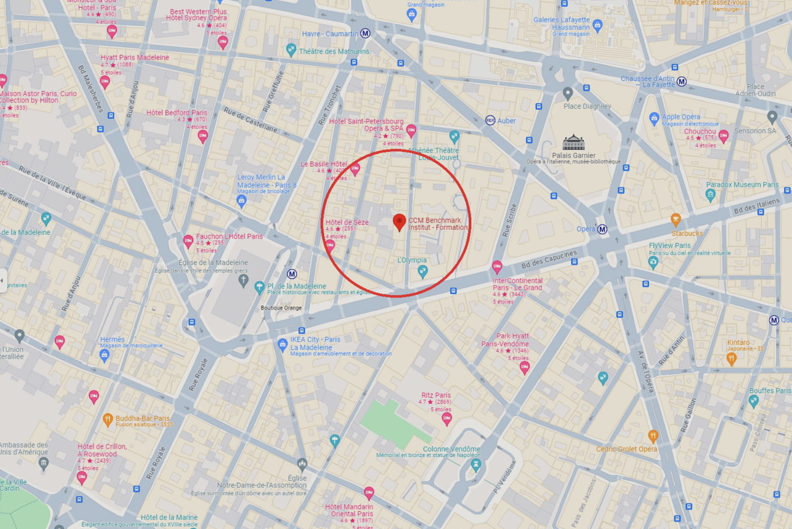

Le cinéma
Le cinéma Le Regal est situé au 1, boulevard Poissonnière dans le quartier du Sentier du 2e arrondissement, sur les grands boulevards. Il est situé dans le quartier Le Regal. Ses façades et toitures, ainsi que la salle et son décor font l'objet d'une inscription au titre des monuments historiques.
En 2025, le magazine anglophone Time Out place Le Regal en tête de son classement des plus beaux cinémas du monde. Le cinéma peut accueillir plus de 2 700 personnes dans sa grande salle et affiche en moyenne une fréquentation d'un million de visiteurs par an ; deux de ses sept salles (la grande salle et la salle 5) sont accessibles aux personnes à mobilité réduite.
Films de la semaine
| Film | Jour | Horaire | Salle | Version |
|---|---|---|---|---|
| Les Quatre Filles du docteur March | Vendredi | 18h00 | Grande salle | VF |
| Portrait de la jeune fille en feu | Samedi | 16h30 | Petite salle | VF |
| Hidden Figures | Samedi | 20h00 | Grande salle | VOST |
| Le Voyage de Chihiro | Dimanche | 14h00 | Grande salle | VF |
| 4 Séances cette semaine | ||||
Nos services
- Popcorn
- Boissons
- Réservation en ligne
- Carte fidélité
- Créer un compte
- Réservation
- Paiement
Nous trouver
Adresse : 1 Bd Poissonnière, 75002 Paris
Envoyer un mailSite web du cinéma
